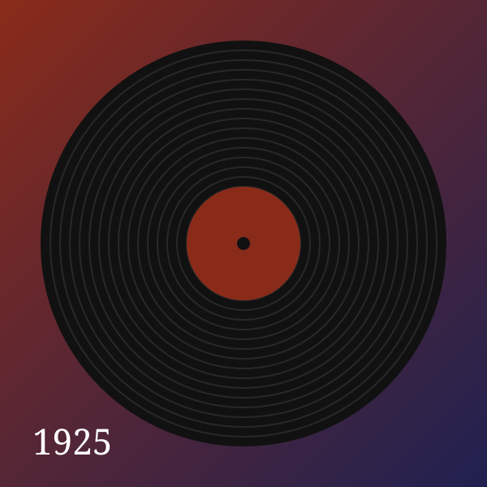

Julius Sutton, “Single Girl” (Gordon cylinder A79, Item NC117; 28 October 1925)

Background: The recorded text opens by warning young women against marriage. It contrasts the singer's former freedom and decent clothing with the labour and deprivation of married life, then describes a husband returning with a bottle and wishing she were dead, followed by children crying for food. The singer repeatedly wishes she were single again.
Why it fits / decision: Add as GM-US-018, B — probable core candidate. The exact recording and pre-cutoff fixation date are directly documented, and the text supplies a clear grievance/defiance mechanism. Do not describe it as revenge; its value is a recorded account of domestic harm and a warning against marriage.